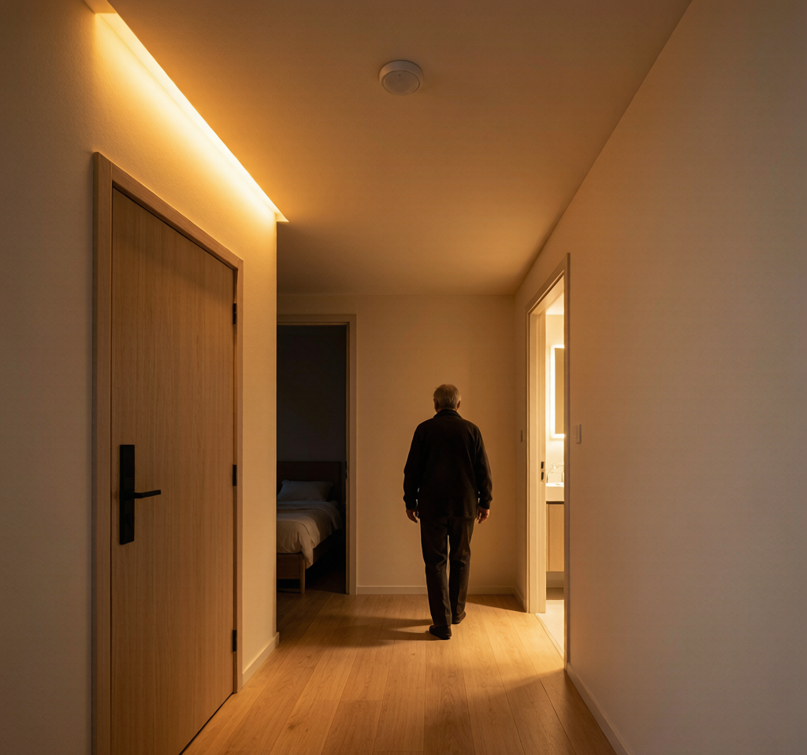

一个500亿的市场，被一句"老人不会用"卡住了
2026年，"十五五"城市更新规划正式落地。据行业测算，全国将完成超过1000万户城镇老旧小区改造，仅适老化照明改造这一个细分市场，规模就有望达到500亿元。
与此同时，2026年1月，上海浦东智能照明联合会联合欧普、立达信、雷士等30多家企业发布了《适老场景照明智能化规范》，首次对居住用房、公共通道、庭院活动等场景的照明控制提出了近场、中场、远场的分级要求。
江西等地已经启动适老化家居产品购新补贴：60岁以上老人购买感应地灯、智能陪护灯等产品，政府补贴15%，每人年度上限1万元。
政策有了，标准有了，补贴也有了。但真实场景是什么？
装了一套"智能灯"，老人嫌太复杂，最后还是用墙上的物理开关。 感应灯灵敏度过高，猫走过就亮，半夜闪个不停。语音控制识别不了方言，老人喊三遍"开灯"不如自己走过去按一下。
500亿的市场，被一句"老人不会用"卡得死死的。
老人到底需要什么样的照明？四个真实痛点
痛点一：夜起摔倒——最致命的风险
WHO数据：65岁以上老人跌倒后骨折发生率约3.5%，其中30%发生在夜间起床如厕时。走廊到卫生间的这段路，是照明改造的"第一优先级"。
传统方案：留一盏小夜灯常亮。问题——太亮刺眼影响睡眠，太暗看不清路面。
智能方案：毫米波雷达感应+超低亮度暖光。人来灯渐亮到5%-10%，人走灯渐灭。不闪、不刺眼、不依赖声音触发（老人脚步轻，声控灯经常不亮）。
痛点二：操作太复杂——"智能"变"智障"
很多智能灯要求：打开APP → 选择房间 → 点击场景 → 等待3秒联动。年轻人嫌烦，老人直接放弃。
正确做法：保留物理开关作为"第一交互"，智能联动作为"增强层"。老人按墙上的开关，灯亮；同时系统自动联动走廊灯渐亮、窗帘缓开。物理开关是底层保障，智能是锦上添花，绝不能替代。
痛点三：光线不适——刺眼和太暗之间没有中间地带
老人晶状体黄化，对蓝光更敏感，高色温（5000K+）的白光会加重不适。但很多老旧小区只装了一盏冷白光吸顶灯，色温单一、显色性差。
适老照明的光参数要求：
| 参数 | 推荐值 | 原因 |
|---|---|---|
| 色温 | 2700K-3500K | 暖白光，老人视觉舒适 |
| 显色指数 | Ra≥90 | 辨识物体颜色更清晰 |
| 频闪 | <5%（ SVM值） | 老人对频闪更敏感 |
| 照度 | 起居200lx / 走廊50lx / 卫生间300lx | 适老规范要求 |
| 调光范围 | 5%-100%无极调光 | 夜起微亮，白天全亮 |
痛点四：维修困难——换个灯泡要等子女来
老旧小区独居老人多，灯具坏了不会修、不敢修。如果驱动电源寿命短、频故障，老人只能在黑暗中等子女周末来换。
这意味着：适老照明的LED驱动必须选高可靠性、长寿命的产品。别在最该省心的地方省那10块钱。
适老场景照明规范：近场、中场、远场三级控制
《适老场景照明智能化规范》最核心的设计，是按控制距离分三级：
| 控制级别 | 距离 | 触发方式 | 典型场景 |
|---|---|---|---|
| 近场控制 | 0-0.5m | 物理开关/触摸面板 | 床头、卫生间门口按键开关 |
| 中场控制 | 0.5-5m | 人体感应/毫米波雷达 | 走廊灯人来灯亮、过道感应灯 |
| 远场控制 | >5m | 语音/手机APP/场景联动 | "我要睡了"一键关全屋 |
这个分级思路非常实用：近场保证可靠性，中场保证安全性，远场提供便利性。 如果远场控制坏了（网络断了、APP闪退），近场的物理开关仍然100%可用——这是适老照明的底线。
LED驱动选型：适老场景的4个硬指标
在适老化改造中，LED驱动电源的选择直接决定了灯具的可靠性和老人体验。以下是4个不可妥协的指标：
1. 调光深度≤5%
夜起场景需要灯只亮5%-10%。如果驱动最低调光深度只能到20%，要么太亮刺眼，要么直接灭——两种都不行。
选型建议：选择支持0.1%-100%无极调光的恒流驱动。涂鸦Zigbee方案中，NEXLAMP的7-12W恒流驱动已支持5%以下深度调光，且低亮度无频闪。
2. 待机功耗≤0.5W
GB 30255-2026新国标首次对智能照明待机功耗提出要求。适老场景中，感应灯常年处于待机状态，待机功耗直接影响电费和产品寿命。
选型建议：优先选择隔离式驱动+低功耗无线模组方案。涂鸦Zigbee模组深度睡眠功耗可低至几十微安，配合低待机驱动，整灯待机可控制在0.5W以内。
3. 雷达感应驱动一体化
传统方案：驱动+雷达模块+继电器，三段拼装，故障点多。新一代方案将毫米波雷达与LED驱动集成，一个模块搞定感应+调光+供电。
选型建议：适老走廊、卫生间优先选用雷达感应一体驱动。比红外PIR灵敏度高、不受温度影响、不会因衣物遮挡而漏检。
4. 寿命≥50,000小时 + 3C认证
按每天使用6小时计算，50,000小时≈23年。选3C认证驱动不只是合规要求——3C认证包含的耐压、绝缘、温升测试，本质上是对老人用电安全的保障。
一套可落地的适老化改造方案
以一套60㎡老旧小区两居室为例：
| 区域 | 灯具方案 | 驱动方案 | 控制方式 |
|---|---|---|---|
| 客厅 | LED筒灯×4（Ra90, 3000K） | 涂鸦Zigbee恒流12W×2 | 物理开关+APP+语音 |
| 卧室 | LED筒灯×2 + 床头感应灯×1 | 涂鸦Zigbee恒流12W + 雷达感应驱动5W | 床头物理开关+雷达联动 |
| 走廊 | LED感应筒灯×2 | 雷达感应一体驱动7W | 纯雷达，无需开关 |
| 卫生间 | 防雾筒灯×2 | 涂鸦Zigbee恒流12W + 人体感应 | 物理开关+人体联动 |
| 阳台 | LED吸顶灯×1 | 普通恒压驱动18W | 物理开关 |
核心设计原则：
- 物理开关永远可用：即使网关断电，所有灯仍可通过墙面开关控制
- 走廊/卫生间全自动：雷达感应，不需要操作，人走灯灭
- 卧室双控：床头物理开关 + 雷达微亮夜灯，老人不起身也能关灯
- 客厅可联动：Zigbee网关接入，子女可远程查看灯的开关状态（非监控，只看灯状态判断老人是否正常活动）
写在最后：适老照明不是"智能照明减配版"
很多人对适老照明的理解是"简化版智能灯"——去掉APP、去掉场景、只留开关。这完全搞反了。
适老照明的本质是：用智能技术让老人感知不到"智能"的存在。 雷达感应让他们不用找开关，调光深度让他们夜起不刺眼，物理开关让他们永远有兜底方案。智能是手段，不是目的。
500亿市场不是靠卖"高科技概念"拿下的，是靠真正解决"老人夜起摔一跤"这种具体问题拿下的。
选对LED驱动，做好场景联动，让灯比老人子女更先一步亮起来——这才是适老化照明改造真正的价值。
关于Nexlamp：耐利普科技专注于涂鸦Zigbee智能照明系统，提供7W-400W全功率段LED驱动电源、智能筒灯/射灯/灯带产品及控制系统。3C认证驱动，支持5%深度调光、低待机功耗设计，适用于适老化改造、智能家居、商用照明等场景。
联系：刘先生 13825496855 | www.nexlamp.com